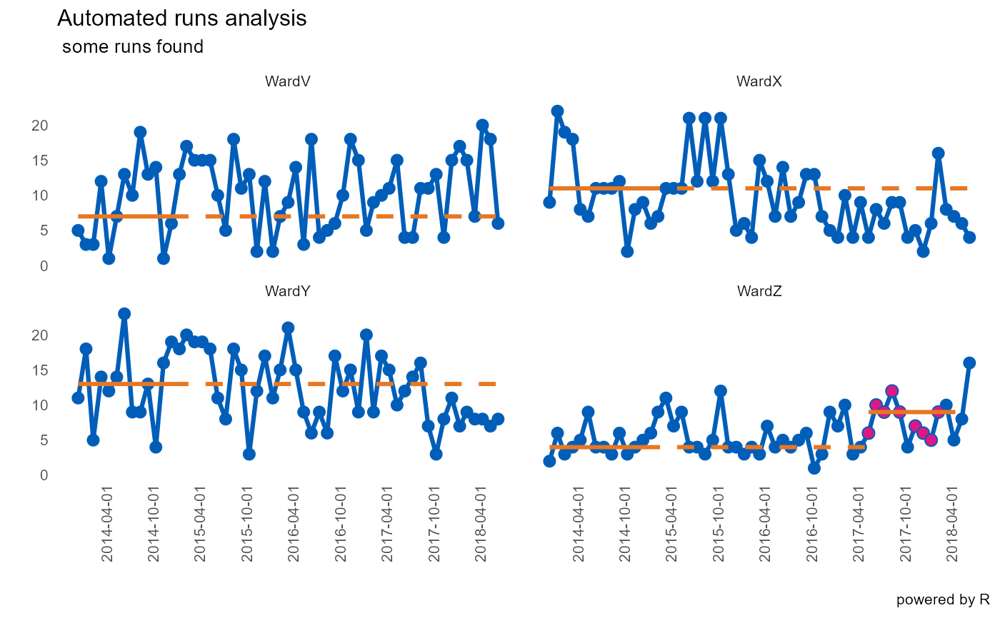

Finds all runs of desired length occurring on desired side of median line. Can also find runs occurring on both sides of the line, though this is of limited use in terms of quality improvement. Re-bases median each time a run is discovered.
runcharter( df, med_rows = 13, runlength = 9, direction = c("above", "below", "both"), datecol = NULL, grpvar = NULL, yval = NULL, facet_cols = NULL, facet_scales = "fixed", chart_title = NULL, chart_subtitle = NULL, chart_caption = NULL, chart_breaks = NULL, line_colr = "#005EB8", line_size = 1.1, point_colr = "#005EB8", point_size = 2.5, median_colr = "#E87722", median_line_size = 1.05, highlight_fill = "#DB1884", highlight_point_size = 2.7, ... )
| df | data.frame or data table |
|---|---|
| med_rows | number of points to calculate initial baseline median |
| runlength | length of run that will trigger re-phased median |
| direction | should run occur "above", "below" or on "both" sides of median |
| datecol | name of date column |
| grpvar | character vector of grouping variable |
| yval | numeric y value |
| facet_cols | how many columns are required in the plot facets |
| facet_scales | defaults to "fixed". Alternatively, "free_y" |
| chart_title | title for the final chart |
| chart_subtitle | subtitle for chart |
| chart_caption | caption for chart |
| chart_breaks | character string defining desired x-axis date breaks |
| line_colr | colour for run chart lines |
| line_size | thickness of connecting lines between run chart points |
| point_colr | colour for run chart points |
| point_size | size of normal run chart points |
| median_colr | colour for solid and extended median lines |
| median_line_size | thickness of solid and extended median lines |
| highlight_fill | fill colour for highlighting points in a sustained run |
| highlight_point_size | size of highlighted points in a sustained run |
| ... | further arguments passed on to function |
list - faceted plot and data.table showing all identified runs
Facets and axis limits are handled by ggplot, though x-axis breaks can be specified using the appropriate character string e.g. "3 months"
# \donttest{ runcharter(signals, med_rows = 13, runlength = 9, direction = "above", datecol = "date", grpvar ="grp", yval ="y", facet_cols = 2,chart_title = "Automated runs analysis", chart_subtitle = " some runs found", chart_caption = "powered by R", chart_breaks = "6 months")#> $runchart#> #> $sustained #> grp median start_date end_date extend_to run_type #> 1: WardV 7 2014-01-01 2015-01-01 2018-07-01 baseline #> 2: WardX 11 2014-01-01 2015-01-01 2018-07-01 baseline #> 3: WardY 13 2014-01-01 2015-01-01 2018-07-01 baseline #> 4: WardZ 4 2014-01-01 2015-01-01 2017-06-01 baseline #> 5: WardZ 9 2017-06-01 2018-03-01 2018-07-01 sustained #># }